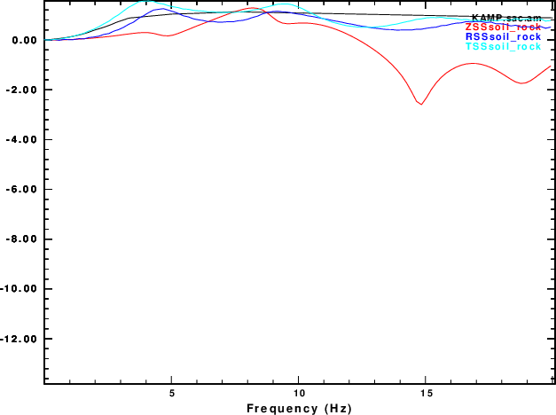

This set of tests uses the CPS program sequence hprep96p, hspec96p, hpulse96 and f96tosac to create plane wave responses, which are the inverse Fourier transform of F(p,ω). The corresponding wavenumebr integration code gives the Fourier transform of the Green's function at distance r as f(r,ω) = INT F(k,ω) Jn ( k r ) k dk . The F's are related through the definition k = p ω. This plane-wave code computes the respective Green's functions which include a radiation pattern term. When taking spectra ratios, the common source effect is canceled our if just one ray from the source is considered.
We consider the two cases of the S-ray leaves the source at angles of 10o and 35o. This is the angle of incident at the surface for the "rock" model and the angle of incidence at the base of the sediments for the "soil" model.
The two models are
| Rock model | Soil model | |
Rock halfspace ISOTROPIC KGS FLAT EARTH 1-D CONSTANT VELOCITY LINE08 LINE09 LINE10 LINE11 H(KM) VP(KM/S) VS(KM/S) RHO(GM/CC) QP QS ETAP ETAS FREFP FREFS 20.0 6.0 3.5 2.7 0.000 0.000 0 0 1 1 |
One has to be careful in computing the response. When using an angle of 45o the surface radial motions were huge. I noted that the phase velocity of an S wave leaving the source was 4.95 km/s which is less than the P velocity in the medium. Thus the P-contribution would be evanescent, and this would affect the surface motion.
The processing script for this angle of incidence is DOITPW10. This script is annotated with comments that describe the operations. Note that the
shell script DOPLTPNG is used to convert the CPS PLT files to a png file using the ImageMagick convert. If ImageMagick is not installed, do something like
plotnps -F7 -W10 -EPS -K < P001.PLT > P001.epsand then use some other code to convert the Encapsulated PostScript P001.eps to a useful format. The DOPLTPNG script is given below.
The DOITPW10 invokes sacampl with the -TXT flag. This means that the ASCII file sacsampl.txt will be available. As an aside, if one wishes to compare the synthetics response to the output of sacampl, then use gsac to create a CSV file using the commands
gsac
The interpolation was required to have the same spacing./ The first few lines of the f001.csv are
Freq (Hz),GRN21 RSS ,GRN21 TSS ,GRN21 ZSS ,-12345 -12345
0.100000,1.003463,1.003403,1.000284,1.014438
0.200000,1.004884,1.005057,1.000618,1.029704
0.300000,1.010836,1.011030,1.001545,1.045874
0.400000,1.019957,1.020095,1.002902,1.063032
0.500000,1.031061,1.031501,1.004651,1.081276
0.600000,1.044949,1.045721,1.006788,1.100714
0.700000,1.062762,1.063560,1.009327,1.121474
0.800000,1.082774,1.083689,1.012225,1.143704
0.900000,1.103481,1.104894,1.015500,1.167573
The top line is a bit obtuse since it contains the Station name and component name. The columns here are
Frequency, Radial soil.rock ratio, Transverse soil/rock ratio, Vertical soil/rock ratio and the quarter-wavelength ratio.
Two figures are produced with a linear and a logarithmic amplitude scale. Fro this case the logarithmic scale is not very informative.
the trace colors indicate the various component ratios. The black curve is the results from the quarter-wavelength code. It is interesting that for nearly vertical incidents that the soil/rock spectral ratios of the radial and transverse components are the same.
The processing script for this angle of incidence is DOITPW35. The graphic output is
|  |
#!/bin/sh
for i
do
B=`basename $i .PLT`
plotnps -F7 -W10 -EPS -K < $i > t.eps
convert -trim t.eps -background white -alpha remove -alpha off ${B}.png
rm t.eps
done